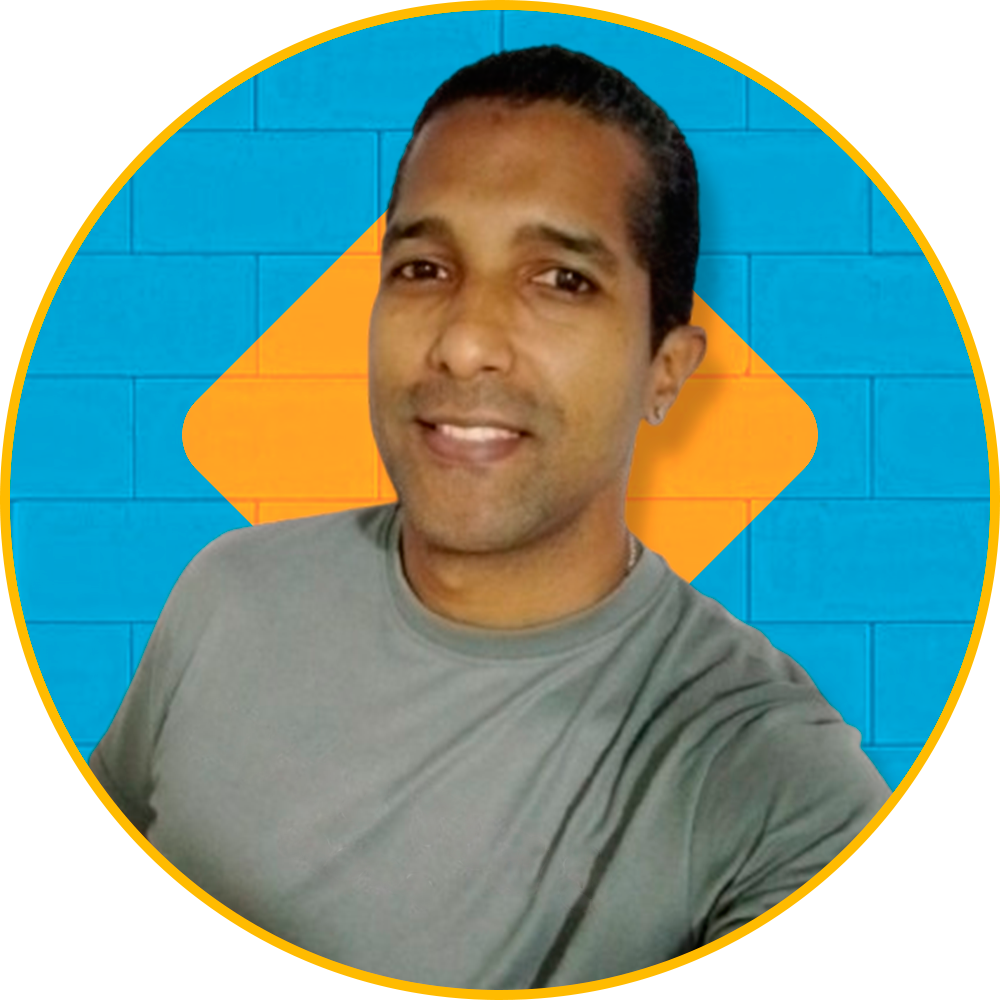

Soy Técnico en Redes y
Soporte certificado por el Instituto de Capacitación Técnica
KEYS en Caracas, Venezuela. Desde 2006, he acumulado una amplia experiencia en
informática, desempeñándome como capacitador en estructura de
computadoras, analista de soporte, técnico en instalación y mantenimiento, y administrador de redes
de datos y sistemas CCTV.
Como programador autodidacta me especializo en JavaScript, typescript y
PHP. Trabajando tanto de manera freelance como a nivel empresarial he desarrollado
habilidades en diseño, maquetación y desarrollo de sitios web que me han permitido crear soluciones
personalizadas y optimizadas utilizando patrones de diseño y paradigmas como la programación
estructurada y orientada a objetos (POO).
Comprometido con las mejores prácticas, organizo mi código siguiendo principios como SOLID, la
filosofía DRY y el uso de patrones de diseño. Esto me permite
minimizar la deuda técnica y evitar
refactorizaciones innecesarias, incluso cuando trabajo bajo tiempos de entrega ajustados.
He liderado proyectos desde cero, gestionando todas las etapas: levantamiento de requerimientos,
diseño, desarrollo, pruebas, implementación, monitoreo y actualización de aplicaciones. Trabajo bajo
la metodología SCRUM, fomentando una comunicación efectiva y un
ambiente de respeto para alcanzar
resultados eficientes y de alta calidad.
Mis proyectos incluyen soluciones desarrolladas con JavaScript, PHP, y
Node.js con Express,
diseñando interfaces de usuario modernas, intuitivas y adaptables, integradas con bases de datos
como SQLite, MySQL, SQL Server (en colaboración con analistas de datos
para minería basada en
modelos de negocios) y MongoDB en entornos prácticos y personales.
Habilidades técnicas:
-
Maquetación Web:
HTML, CSS, SASS, Tailwind, Bootstrap, Wordpress, Bootstrap Studio.
-
Lenguajes de Programación:
JavaScript, Typescript, Node, PHP, Python.
-
Frameworks y librerias:
React, Laravel, Flask.
-
Bases de Datos:
MySQL, PostgreSQL, SQL Server, SQLitey, MongoDB.
-
Control de Versiones:
Uso de herramientas como Git, GitHub y Bitbucket para gestionar código fuente.
-
Algoritmos y Estructuras de Datos:
Comprensión de conceptos fundamentales para escribir código eficiente y escalable.
-
Desarrollo de Software Escalable:
Uso de principios como SOLID, buenas practicas aplicando filosofias como DRY, KISS y uso de
patrones de diseño en caso de ser necesario.
-
Desarrollo de APIs:
Creación e integración de APIs RESTful.
-
Configuración de Entornos:
Experiencia con servidores locales (XAMPP, WAMP, LARAGON) y tecnologías de virtualización o
contenedores como Docker.
-
Herramientas de IA:
Copilot, DeepSeek, Lovable, Bolt, QwenChat.
-
Metodologías Ágiles:
Experiencia trabajando bajo metodologías como SCRUM o Kanban para gestión de proyectos.
-
Herramientas de edición y diseño:
Photoshop, Illustrator, Blender, Camtasia Studio, Audacity.
Habilidades blandas:
Comunicación efectiva, trabajo en equipo, resolución de problemas, adaptabilidad, iniciativa,
gestion del tiempo, pensamiento critico, autodidacta.